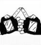
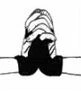
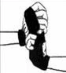
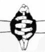
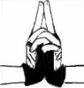
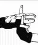

| HandSign | Name | Description |
|---|---|---|
|  | HORSE | This seal is commonly used with Fire Release and Earth Release. The Fire Release Technique is a type of Elemental Chakra. The technique is performed by forming superheated chakra in the stomach, then released into the lungs and finally expelled from the mouth. There are also variations of this technique by mixing it by some means such as gunpowder, bomb cards, and chakra flow into a weapon. Commonly paired with the Tiger Seal, the Fire Release is a long-range offensive technique that causes burn or explosive damage. This type of chakra is common among the ninja of the Leaf Village, in the Land of Fire, in particular, the Sarutobi clan and the Uchiha clan have a particular affinity. Amaterasu is classified as the highest form of the Fire Release. |
|  | SNAKE | This seal is often used with the Earth, Lightning, and Wood Release. Lightning Release is a type of Elemental Chakra that guarantees the user to generate electricity, increasing the vibration frequency of their chakra, so as to be able to deliver precise attacks and high-speed movements. Electricity paralyzes the target preventing them from further movement and leaving them vulnerable to generally final blows. Although rarely, electricity can be infused into weapons, such as swords and shurikens, in a similar way to the Wind Release, giving them greater penetration and damage. When the technique is released from the user’s body, and does not require physical contact, the electricity generated does not move as fast as normal lightning. |
|  | RAT | This hand seal is commonly affiliated with the special Shadow Techniques of the Nara clan. Shadow Imitation allows the user to extend their shadow over a certain area and the presence of shadow allows this area to be extended to reach distant targets, however, the shadow surface must remain regular. Once in contact with the target’s shadow, the two merge, and the victim is forced to mimic the user’s movements. |
| HARE | The Hare is also not a Seal associated with a particular Elemental Release, but it is often used by either Sasuke or Kakashi whenever they are channeling the Chidori. Chidori is a technique that uses lightning-type Release, it was created by Kakashi Hatake, who would later teach his disciple, Sasuke Uchiha, becoming his signature technique. | |
|  | DRAGON | The Dragon is a very specific seal. It is not attached to any specific elemental Release technique, but it can be combined with every Elemental Release to create a dragon-shaped manifestation of that particular element. It is actually more cool than practical since it drains a lot of energy and is rather impractical for the hands. |
|  | TIGER | This seal is commonly used with Fire Release and Earth Release. The Fire Release Technique is a type of Elemental Chakra. The technique is performed by forming superheated chakra in the stomach, then released into the lungs and finally expelled from the mouth. There are also variations of this technique by mixing it by some means such as gunpowder, bomb cards, and chakra flow into a weapon. |
|  | OX | |
| DRAGON | ||
| RAT | ||
| TIGER | ||
| TIGER | ||
| HARE | ||
| OX | Although the Ox is not specifically associated with any Nature Release, it is commonly used by the members of the Uchiha Clan for various Fire Release techniques. There is no specific technique to analyze here, as the Ox is very versatile. | |
| TIGER | ||
| TIGER |